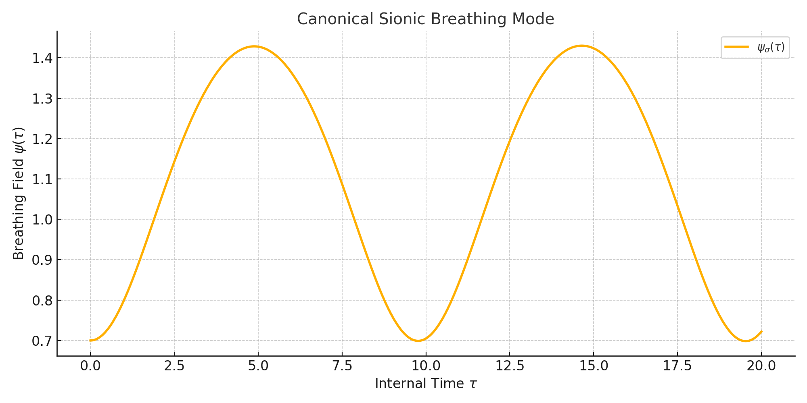
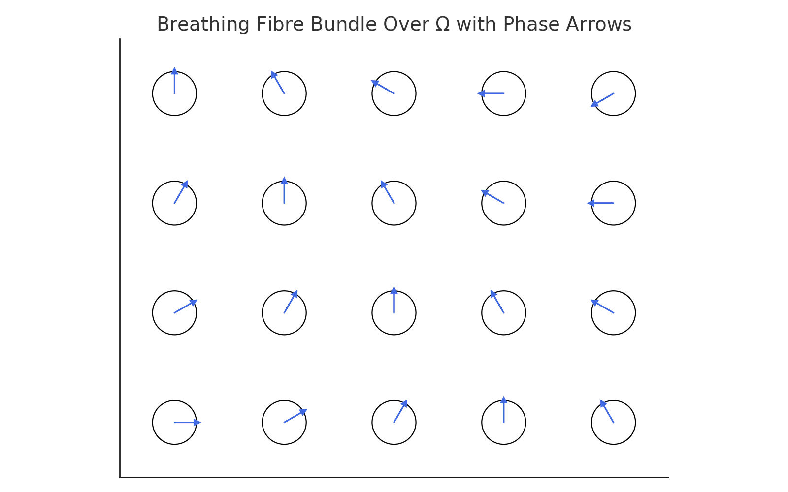

🌀 Key Visuals
Sionic Breathing Mode
Entangled Phase-Locked Breathing

Breathing Fibre Bundle
Collapse as Phase Contraction

by Dani and the Machine
BMQM is a geometric, thermodynamic, and algebraic extension of quantum mechanics. It redefines time as internal rhythm (\tau), treats particles as breathing modes of a membrane \Omega, and models collapse as entropy contraction. Identity is rhythm. The vacuum breathes.
Using Qiskit, we simulate discrete breathing states across qubit lattices. Each qubit encodes amplitude and phase; unitary operators simulate \mathcal{H} \star \Omega evolution.
\sigma = 1.7365